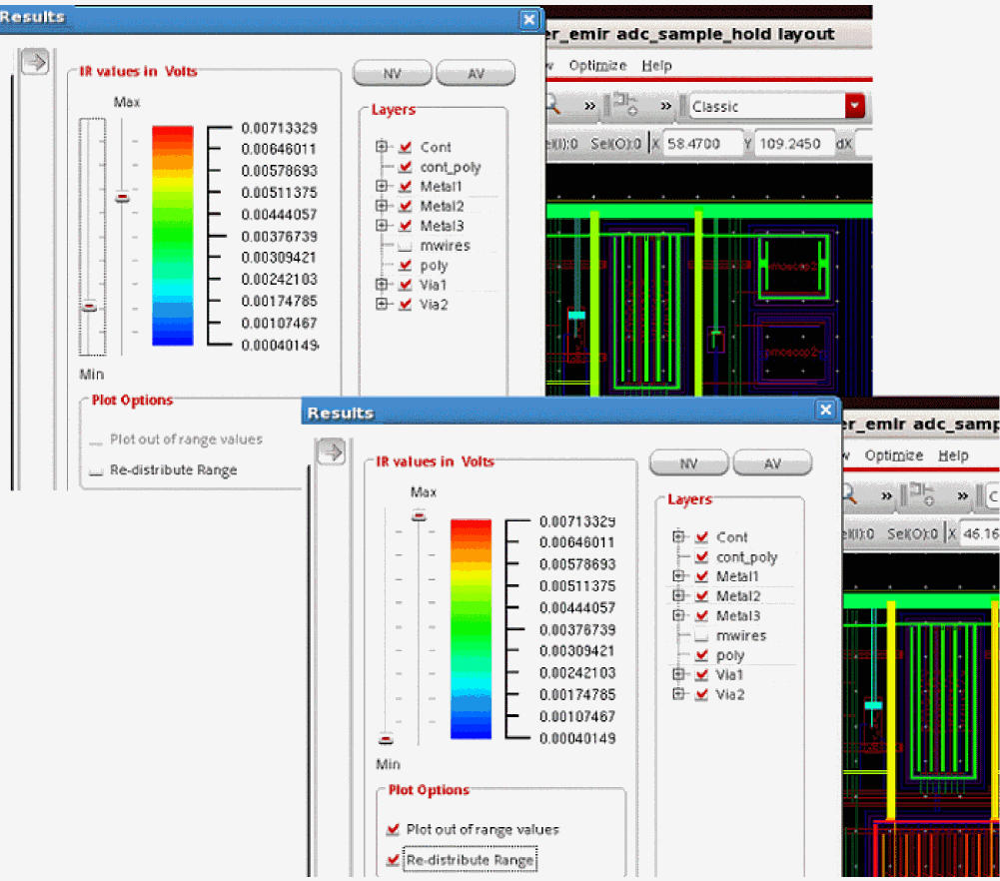
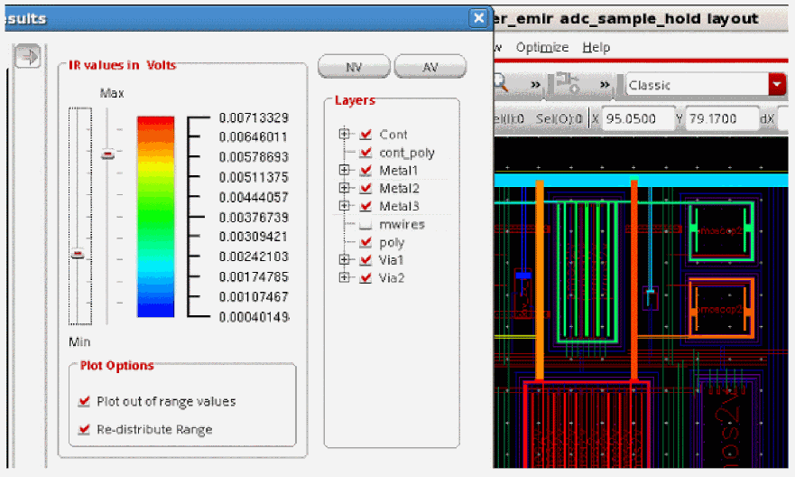

8
IR Drop Analysis Results
- Overview
- Batch Mode Support for IR Drop Analysis
- Signal Net IR Drop Analysis
- Power Gate Support
- Static EMIR Analysis
- Static Power Grid Solver
- Solid Shape Highlighting
- Displaying Finer Color Gradient for Selected Layers in IR and EM Plots
- Specifying Multiple Simulation Result Files for EMIR Analysis
- Viewing the IR Drop Analysis Results
- Displaying and Querying EMIR Results
- Types of IR Drop Analysis Plots
- Plotting the Least-Resistive Path
- Calculating Effective Resistance between any Two Nodes on a Net
- Generating EMIR Analysis Reports in Voltus-Fi-XL
- Reporting a List of Devices from a Subnode
- Reporting On-Resistance (RON) Values
Overview
Voltus-Fi-XL uses the simulation database generated by Spectre APS/XPS simulators and displays the results of the IR drop analysis on the Virtuoso layout.
It also generates text reports of the analyses and lets you query the analyses results to view specific violations in the layout. This is used to debug the high IR drop regions in the design.
Batch Mode Support for IR Drop Analysis
Batch mode support is provided for loading IR drop analysis results and generating text reports. The following commands are used to load and print IR drop analysis results in Voltus-Fi-XL:
-
load_ir_results
Loads the IR drop analysis results -
print_ir_report
Prints the IR drop analysis reports
The detailed description, syntax and examples of how to use these commands are provided in the load_ir_results section of the “Batch Mode Execution” chapter.
Signal Net IR Drop Analysis
By default, IR drop analysis can only be applied to power nets, which are nets driven by DC or constant voltage sources. The advanced feature, signal net IR drop analysis, lets you perform IR drop analysis on signal nets, which are nets that are not connected to any DC or constant voltage source.
In the signal net IR drop analysis, the maximum or average IR drop is reported using the analysis=[sigvmax sigvavg] statement in the EMIR control file (emir.config). The signal net IR drop is reported as the difference between the reference voltage and the voltage of the sub node (vref-vnode). For a particular signal net, the reference voltage for calculating the IR drop value at each sub node and time point is defined as the average voltage of all sub nodes (reftype=[avg]), the maximum voltage of all sub nodes (reftype=[max]), or the voltage of a user-specified pin (reftype=[pin]).
Alternatively, for nodes driven by voltage sources and the voltage of the net driven by the voltage source can be used as reference (findsrc=yes).
The following is an example of the EMIR control file (emir.config):
net name=[X1.*] analysis=[sigvmax] reftype=[max] findsrc=yes
solver method=direct
In the above example, the signal net IR drop analysis is performed for all nets X1.*. The maximum IR drop for the sub nodes of each net is reported. For the IR drop analysis at each net and time point, the sub node with the highest voltage is picked as the reference voltage. For any net driven by a vsource, the voltage of the sub node driven by the vsource is used as reference.
When using reftype=[max] for a net with three sub nodes: net1_1 (1V), net1_2 (2V), and net1_3 (3V), the detected reference voltage will be 3V, and the IR drop calculated will be 2V for net1_1, 1V for net1_2, and 0V for net1_3. When using reftype=[avg] the reference voltage will be 2V, and the IR drop calculated will be 1V for net1_1, 0V for net1_2, and -1V for net1_3.
In addition, if net1_2 is driven by a vsource and findsrc has been specified as yes, the voltages of net1_2, at all time points, will be used as the reference voltages.
For details of the supported EMIR control file options that can be specified, see EMIR Control File Options Supported in Voltus-Fi-XL in the “Data Preparation” chapter.
Power Gate Support
Power networks may contain power gates which enable or disable the power supply in the circuit. These power gates split the power supply RC network into two parts. The RC network driving the power gate, and the RC network being driven by the power gate. This is shown in the figure below. The MMSIM EMIR analysis can handle such power gates.
To invoke the power gating handling, add the power gate setting in the EMIR control file (emir.config), as shown below.
net pwrgate=[vdd vdd_int] analysis=[vavg]
Both, the power supply net (vdd) driving the power gates, and the internal power supply net (vdd_int) driven by the power gates, need to be specified in the net statement in any order. Wildcarding is supported for the internal power supply net(s), but not for the power supply net.
Next, the required analyses need to be defined, as shown above. The IR drop report includes both the power supply net in the usual report filename, for example, input.rpt_ir and the internal power supply net is reported in a file, such as input.rpt_pwg or input.emirtap.rpt_pwg for direct and iterated methods, respectively. As for the EM analyses, they are performed as usual, if specified.
In addition, an important parameter Ton is also be reported in the .rpt_pwg file. It reports the time taken to power up the terminal of the internal power supply net to 95% of the power supply level (VDD).
Note: The parameter Ton can be infinity if the internal power supply level does not reach 95% of VDD.
The subsequent sections cover the various options available in Voltus-Fi-XL for viewing the IR drop analysis results on the Virtuoso layout.
Viewing the Power-Up Summary Report
Voltus-Fi-XL supports viewing of the power-up test summary report in the GUI. The feature is enabled only after the IR drop analysis results are loaded. For this, the Power-up Report button is provided on the IR tab of the IR/EM Results form.
When clicked, a view-only power-up summary report is displayed in the GUI. The report is available only if the following conditions are met:
A sample power-up report is shown below.
Figure 8-2 Power-Up Summary Report
In addition to information about the type of simulation results, the report contains the following information:
- NumPwgOn: The number of power switches turned on during the simulation vs. the total number of power switches
- LastPwgOn: The name of the last power switch to be turned on in the simulation
- Peak rush current (Imax): The peak rush current of the power-up net in the simulation
- Average wake up time: The average wake-up time of the switch net in the design
- Comment: The link to the detailed power-up report
- Details of the wave form analysis reports
Static EMIR Analysis
A static EMIR analysis evaluates IR drop and EM currents based on user-provided subcircuit instance current consumptions without running a transient or DC simulation. The user-provided currents are distributed to the tap devices based on the W/L ratio of the devices in the design. The IR drop and EM current analysis is performed based on the value of current at each tap device.
The static EMIR analysis is enabled with the “static ifile” statement in the EMIR configuration file.
net name=[I1.VDD I1.VSS] analysis=[vavg iavg]
static ifile="static_currents.txt"
Since the analysis is static, the IR drop vmax and vavg, and the EM current imax, irms, and iavg values will be the same, and just one of these can be selected in the statement.
The subckt instance currents are defined (in A) in the “static_currents.txt” file with the subckt instance name, the subckt port name, and the value of current flowing in the port.
I1 VDD 0.001
I1.I2 VDD 0.005
I1.I2/I3 VDD 0.00001
I1.I2/I3/I4 VDD 0.000005
I1 VSS ‐0.005
The accuracy of the static EMIR analysis depends greatly on the detailed current information in the static_ifile. It is highly recommended that you provide the current consumption for each subckt instance.
The results of the static EMIR analysis are written into the same IR drop and EM current text reports, and into the same binary EM database as the dynamic EMIR analysis. Static EMIR analysis cannot be combined with the dynamic analysis. You can perform either a static or a dynamic EMIR analysis at one time. When running the static EMIR analysis all other Spectre analyses like DC, TRAN and so on will be ignored.
The static EMIR analysis can also be applied to designs with power gates. In that case the pwrgate statement needs to be added to the EMIR configuration file as follows:
net name=[I1.VDD] analysis=[vavg iavg]
static ifile="static_currents.txt"
net pwrgate=[I1.VDD I1.VDD_INT] analysis=[vavg iavg]
and the power gate current is required to be added to the “static_currents.txt” file as follows:
I1 VDD 0.001
I1 VDD_INT 0.0005
Static Power Grid Solver
The static power grid solver (SPGS) feature of Spectre can be used in Voltus-Fi-XL to calculate all pin-to-tap resistances based on the description of a DSPF file and the options set in the EMIR configuration file. The resistances calculated by SPGS are electrically equivalent resistances, and not the summation of resistors. The calculation assumes that all pins are connected together to form a global pin. After calculation, the resistance between the global pin and all taps is generated and listed based on the significance of their values.
This feature can also be used to calculate the pin to pin resistance between any two nodes of the same net. For details, see Calculating Effective Resistance between any Two Nodes on a Net.
The diagram below shows the definition of pin, sub nodes, and tap nodes in the DSPF file.
Figure 8-3 Pin, Sub Node, and Tap Node Information in the DSPF File
The static EMIR analysis is enabled with the “spgs net=...” statement in the EMIR configuration file.
spgs net=[i1.vcc i1.vss]
spgs rshort=1e-12
spgs pwrgate = [i1.vcc i1.outp]
The net statement defines the power nets to be analyzed. Resistors in the power net can be optionally shorted with the rshort option. If the power net contains a power gate, then the pwrgate option needs to be defined in the configuration file.
The SPGS flow requires the DSPF file to be included in the Spectre input file with the dspf_include statement, as shown below.
dspf_include “pll.spf”
The power nets need to be connected to voltage sources, and device models need to be defined for the devices in the instance section in the DSPF file. For running the SPGS feature, Spectre is run as in the regular EMIR flow, as shown below.
spectre +aps input.scs +emir=spgs.conf
The SPGS report provides a list of the pin to tap node resistors ordered highest to lowest, as shown below.
It is recommended to run the SPGS feature separately and not together with any other EMIR analysis. SPGS also supports the conversion between pin, tap node, and sub node. The following statements specified in the emir conf file convert the tap node, MPM3@44:s of net I1.vdd to a pin, and the subnode VDD:5 to a tap node.
spgs tap2pin net=[i1.vdd] include=[MPM3@44:s]
spgs sub2tap net=[i1.vdd] include=[VDD:5]
All conversion options are described in the EMIR Control File Options Supported in Voltus-Fi-XL table in the “Data Preparation” chapter.
Solid Shape Highlighting
The rail analysis plots that are displayed on the Virtuoso Layout can be viewed as either stick diagrams or solid shape highlights. In the solid shape display, the plots highlight the full shape of the presistors, while in the stick diagram display, the presistors are connected with thin lines over the layout shapes.
The solid shape display is more useful for designers because it allows them to see the shapes that are failing the analysis. There are two flows for solid shape display. You can either specify the DFII layer map file or the Quantus run name for viewing solid shape display for plots. When you specify the Quantus run name, the plots are displayed based on the shape database generated by Quantus.
For details of how to specify the two options in the GUI, see Viewing the IR Drop Analysis Results.
Quantus Shape Database-Based Flow
To display plots using the shape database generated by Quantus, you must ensure the following:
-
The Quantus command file or the CCL file should include the following command:
extraction_setup -analysis em
For details, see theextraction_setupcommand in the “Quantus Command Files” chapter of the Quantus Extraction Users Manual. - Quantus should be set in the path and its version should be compatible with the Voltus-Fi-XL version being used.
Support for Specifying Cut-Layers for Metal Layers while Highlighting Solid Shapes
In Voltus-Fi, cut-layers can be specified for metal layers for displaying the EMIR result plots. The cut-layers do not actually chop the shapes on the metal layers in the layout, but when plotting the results, while the shapes on the metal layers are highlighted, those on the specified cut-layers are not highlighted. This helps to view more accurate plots.
An example of a plot is shown below. In this plot, the shapes on metal layer, M1 are highlighted while those on the cut-layer, CM1 are excluded.
Figure 8-4 Specifying Cut-Layers for Metal Layers

To let you specify cut-layers for metal layers, the following SKILL function is provided:
Use the SKILL function to specify the metal layer and the corresponding cut-layer as a pair. For example,
vsaSetLayersToMergeDuringResultsLoading("M1 CM1A")
where CM1A is the cut-layer for metal layer, M1.
Following are the key aspects of this feature:
-
You can specify multiple pairs of metal and cut-layers. For this, call the function multiple times. Voltus-Fi honors all these calls. For example,
vsaSetLayersToMergeDuringResultsLoading("M1 CM1A")
wherevsaSetLayersToMergeDuringResultsLoading("PO CPO")CM1Ais the cut-layer for metal layer,M1andCPOis the cut-layer for layer,PO. -
You can specify multiple cut-layers for one metal layer. For example, if the following sequence of calls are made, Voltus-Fi honors both the calls.
vsaSetLayersToMergeDuringResultsLoading("M1 CM1A")
vsaSetLayersToMergeDuringResultsLoading("M1 CM1B")
where,CM1AandCM1Blayers are cut-layers for the same metal layer,M1.
Displaying Finer Color Gradient for Selected Layers in IR and EM Plots
In the DFII layer map flow, for solid shape display of IR/EM violations on the Virtuoso layout, Voltus-Fi-XL locates all the nodes lying on a shape and then colors the shape with the worst violation value among all resistors connected to these nodes.
However, sometimes resistors do not align well with the shapes used to display the violations. This may be because the shapes are large and have multiple nodes and resistors. Voltus-Fi supports a finer display of the color gradient for violations in different segments of such layers. The shape polygons are split into subpolygons and then the subpolygons are colored with the worst violation value for all resistors connected to the nodes in the split shape. This feature is turned on by default for all layers. However, you can select specific layers to view their finer gradient instead of viewing for all layers.
For this, specify the DFII Layermap file and then click the Finer Gradient button provided on the IR or EM tabs of the IR/EM Results form. In the Finer Gradient Layer Selection pop-up, click Deselect All and then select the PGDB layers for which you want to view finer gradient. For details of the steps involved, see Viewing the IR Drop Analysis Results.
A comparison of finer gradient display versus the original display is shown in below figure.
Figure 8-5 Viewing the Finer Gradient Display
Specifying Multiple Simulation Result Files for EMIR Analysis
While performing EMIR analysis in Voltus-Fi-XL, multiple bin files can be specified, both in the GUI mode as well as in batch mode. There are two different use models for specifying multiple bin files depending upon whether they are present in the same or different directories.
The following topics are covered in this section:
- GUI Support for Specifying Multiple Bin Files in Different Directories
- GUI Support for Specifying Multiple Bin Files in the Same Directory
- Batch Mode Support for Specifying Multiple Bin Files
GUI Support for Specifying Multiple Bin Files in Different Directories
To specify multiple bin files located in different directories, follow these steps:
- Open the IR/EM Results form.
-
Click the
+button is provided for the State Directory/Results File field. This button is provided on both the IR and EM tabs of the IR/EM Results form. -
The Select MMSIM Results File pop-up window opens. Use this to add multiple bin files for EMIR analysis. For details, see Viewing the IR Drop Analysis Results.
Figure 8-6 Specifying Multiple Simulation Result Files in Different Directories
GUI Support for Specifying Multiple Bin Files in the Same Directory
To specify multiple bin files located in the same directory, follow these steps:
- Open the IR/EM Results form.
- Click the browser button next to the State Directory/Results File field. The Select MMSIM Results File pop-up window opens.
- Open the directory containing all the bin files. In the Files of type field, only the bin files will be visible. This is shown below.
- Any sub-directories in this directory will also be visible and can be selected.
-
Select all the bin files that are required and click Open.
Figure 8-7 Specifying Multiple Bin Files in the same Directory
+ button located next to the State Directory/Results File field on the IR tab of the IR/EM Results form is not needed for selecting multiple bin files.Batch Mode Support for Specifying Multiple Bin Files
In batch mode, different options of the vfibatch command are used to specify multiple bin files in different scenarios. The following use models are supported:
-
Specifying multiple bin files that contain simulation results for different nets from the same testbench. This is useful in large designs, where simulation is run separately for different nets of the same testbench to improve the runtime. In such cases, you can create
emir_binfor different nets in different bin files. In batch mode, the-dboption of thevfibatchcommand is used to generate reports in this scenario.
Consider an example where separate bin files are created for nets,VDDandVSS. Theemir.conffiles for the two nets will be as follows:emir.conf.vdd net name=[X0.VDD] analysis=[iavg imax sigvmax vmax] emirutil techfile = qrcTechfile layermapfile = contactmapfile solver method=[iterated]
For details on how the EMIR analysis reports are generated for the above scenario in batch mode, see Reports Generated for Multiple Bin Files for Different Nets from the Same Testbench.emir.conf.vss net name=[X0.VSS] analysis=[iavg imax sigvmax vmax] emirutil techfile = qrcTechfile layermapfile = contactmapfile solver method=[iterated] -
Specifying multiple bin files that contain simulation results from different testbenches for the same design. You can specify multiple bin files that are located either in the same directory or in different directories. In batch mode, the
-db_pathand-db_multi_pathoptions of thevfibatchcommand are used to generate reports in these scenarios, respectively. For details on how the EMIR analysis reports are generated for these scenarios in batch mode, see Reports Generated for Multiple Bin Files from Different Testbenches in a Design.
Viewing the IR Drop Analysis Results
To plot EMIR results in Voltus-Fi-XL, ensure the following:
-
The
emirmode is enabled while performing simulation. -
The simulation result file is available in the output directory of the simulation results. The naming convention of the simulation result file is,
*.emir#_bin.For example, your result file could be named,xps.emir0_bin.
Follow these steps to view the IR drop analysis results.
-
In the Voltus-Fi-XL console, choose IR/EM Analysis – Rail Analysis Results. The IR/EM Results form opens. This form is shown below.
The IR/EM Results form has the following tabs: IR, EM, Structural Analysis, LRP Browser, Pin2PinR, and What-If.
Click the IR tab to plot the IR drop analysis results.
Figure 8-8 IR/EM Results Form – IR Tab
On this tab, perform the following steps:
-
In the Results group box, specify the State Directory / Results File that stores the results of the simulation. The naming convention of the result file is
*.emir#_bin. - Select the + button to specify multiple result files or bin files. For details, see Specifying Multiple Simulation Result Files for EMIR Analysis.
- Specify the Shrink factor, if any, by which the xDSPF was shrunk. This is used for flows where the xDSPF is generated with a shrunk technology but the layout remains on the original technology. For example, if the original xDSPF was shrunk by 80%, the shrink factor should be specified as 0.8. The shrink factor value is less than 1.
-
Click Customize Display to select the nets for which you want to view the display. The Customize Display pop-up window opens. This helps save time as results are loaded only for the selected nets and not for all nets. You can also specify the IR Threshold value in this window. This is shown below.
Figure 8-9 Customize Display FormThe Customize Display button is enabled only before the results are loaded. It is disabled once the results are loaded. -
Specify either the QRC Run or the DFII Layermap. When either of these options is specified, the plots displayed in the layout show solid shape highlighting. For more information, see Solid Shape Highlighting.
-
Select QRC Run. Two text fields with browse buttons appear in the form. Click on the Browse buttons to open the pop-up windows, Select QRC Run Directory and Select QRC Run Name to specify the path to the QRC Run Directory and the QRC Run Name, respectively.The display now generated will be based on the shape database generated by Quantus.
 When you switch between the IR and EM tabs, the status of the QRC Run radio button is maintained. This means that the Quantus run selections, run directory and run name fields, made on one tab remain populated for the other tab even after clearing the analysis results.For more information about the setup requirements for the Quantus run flow, see Solid Shape Highlighting.
When you switch between the IR and EM tabs, the status of the QRC Run radio button is maintained. This means that the Quantus run selections, run directory and run name fields, made on one tab remain populated for the other tab even after clearing the analysis results.For more information about the setup requirements for the Quantus run flow, see Solid Shape Highlighting. -
Select the DFII layer map file, which is the APS/XPS-to-DFII layer map file. You can create a new layer map file or edit an existing file, using the edit button provided next to the field. This layer map file is the same file that is used in structural analysis. For more information about the file format and description, see DFII Layer Map File in the “FIle Formats” chapter.
You can also specify this file by using thevfiDfiiLayerMapFileenvironment variable in either the.cdsenvor the.cdsinitfile. For more information, refer to the Environment Variables chapter.
The following considerations apply to the DFII layer map flow:- When the DFII layer map file is specified, the visibility of the DFII layers in the layout is in synch with the layers selected in the Layers group box or the layer selection window of the Display form.
- When the correct mapping in the DFII layer map file is either not specified or if some layers are missing in this file then the resistors or nodes of those layers will not be highlighted in the layout because there will be no shapes attached to them.
-
When this file is not specified, the pop-up-window shown below opens. If you click Yes, the plots are displayed using stick diagrams
-
For the DFII layer map flow, click Finer Gradient to view the finer gradient for the selected layers. When you click this button, the Finer Gradient Layer Selection pop-up window opens. This is shown in below figure.
Figure 8-10 Selecting Layers for Viewing Finer GradientIn this window, all the layers are selected by default. Click Deselect All and then select specific PGDB layers for which you want to view finer gradient and click OK. For details, see Displaying Finer Color Gradient for Selected Layers in IR and EM Plots.
-
Select QRC Run. Two text fields with browse buttons appear in the form. Click on the Browse buttons to open the pop-up windows, Select QRC Run Directory and Select QRC Run Name to specify the path to the QRC Run Directory and the QRC Run Name, respectively.
- Click Load Results to load the results. You can click Clear Results to clear the results.
-
Click Power-up Report to view additional information about power gates. This feature is only used in power-gated designs. If this report is not available, the software provides the following information in the Input not available pop-up window.
Figure 8-11 Input not Available for Power-Up ReportFor more information, see Viewing the Power-Up Summary Report. -
Once the results are loaded, the Rail Analysis cyclic field in the Net Plot group box becomes enabled. From the list, select the type of plot you want to view. The following options are available:
- IR – IR Drop: analyzes and reports voltage drop
- IRAVG – IR Avg Drop: analyzes and reports average voltage drop
- RC – Resistor Current: analyzes and reports peak resistor currents
- IV – Transistor Voltage: analyzes and reports the voltage drop at device nodes, also known as tap nodes
- TCRMS – RMS Tap Current: analyzes and reports RMS tap currents
- TCAVG – Average Tap Current: analyzes and reports average tap currents
- TC – Peak Tap Current: analyzes and reports peak tap currents
- POWER – Resistor Power: analyzes and reports resistor power, which is the value of current through a resistor multiplied by the voltage across the resistor
- PI – Powergate current: analyzes and displays the currents through the resistors when power gates are connected
- PV – Powergate voltage: analyzes and displays the IR drop across power-switch instances. This plot can be used to analyze and debug regions of high IR drop inside the power-gated block of the design
- RCAVG – Average Resistor Current: analyzes and reports average resistor currents
- RCRMS – RMS Resistor Current: analyzes and reports RMS resistor currents
-
REffective – Effective Resistance: analyzes and displays the pin to node resistancesFor details of the above plots, see “Types of IR Drop Analysis Plots”.
- Click Power Nets to list all power nets in the list box.
- Click Signal Nets to list all signal nets in the list box.
- Click All Nets to list all power and signal nets in the list box.
-
Click Select All Nets to select all the nets listed in the table. For example, if you select Power Nets and click Select All Nets, all power nets listed in the table are selected. The list box lists Net Type and the corresponding Net Name.
You can search for specific nets for which you want to plot results by typing the net name in the text field provided in the form. The list box is updated to display information about the specified net. - Click Show Plot to view the plot on the Virtuoso layout. When you click Show Plot, the IR/EM Results form expands to show the available plot display options. You can use these options to customize the displayed plots. These options are explained in detail in the Specifying the Display Options for IR/EM Plots section.
-
Click Clear Plot to clear the plot for the selected net from the Virtuoso layout. For this, select the net for which you want to clear the plot in the list box and then click Clear Plot. In the figure below, the plot for the net, VDD is cleared.
-
Specify IR threshold for viewing IR drop violations above the specified threshold value. Select V or mV to specify the threshold voltage in volt and millivolt, respectively. When this value is specified, the Min - Max slider range is updated to reflect the specified minimum violation value and the plot is updated in the layout. For example, in the image below, the IR threshold value is specified as 0.25. So, the Min value of the slider range is updated to 0.25.
Figure 8-12 Specifying the Threshold Value for Viewing IR Drop Violations - The Plot Powergate Nets option is used for plotting the IR drop analysis results of power-gated designs. In this case, when you click the Select Nets option and select a net from the list box, all the switched nets for the selected always-ON net also get selected. The software plots results for all the switched nets together. This option is turned off by default.
- Click Save to save the specified settings in a configuration file.
-
Click Load to automatically load settings saved in a previous run in the IR/EM Results form. For this, you can save the settings in a
.vpsconfigfile. When you click Load, the software searches for the.vpsconfigfile. If the file is available, the settings specified in this file are restored in the form. A sample.vpsconfigfile is shown in Example 8-1.
You can also load the EMIR control file oremir.configfile using this button. When this file is specified, the technology file and layer map file information provided in this file is used for EMIR analysis. For more information about the EMIR control file, see Simulation Requirements and Setup in the “Data Preparation” chapter.
Figure 8-13 Viewing the IR Plot for All Power NetsFigure 8-14 Viewing IR Plot for Selected Nets
Access to this video will depend on the availability of a web browser and a Cadence Online Support account.
Tcl Commands:
An example of the set of Tcl commands for loading and printing the IR drop analysis reports is as follows:
load_ir_results\
./abc/raw.out/xps.emirtap.emir0_bin\
-print_ir_report \
-net all_power \
-type ir \
-filename all_ir.txt\
Example 8-1 Sample Configuration File
A sample .vpsconfig file is shown below.
setvar vps_results_IR
{/icd/epsrd_t1nb_002/babita/xps/demo/design/raw.078/xps.emirtap.emir0_bin}
setvar vps_results_EM
{/icd/epsrd_t1nb_002/babita/xps/demo/design/raw.078/xps.emirtap.emir0_bin}
setvar vps_results_IR_Flow {mmsim}
setvar vps_results_IR_shrink_factor {}
setvar vps_results_EM_shrink_factor {}
setvar vps_results_EM_tech_file
{/icd/epsrd_t1nb_002/babita/xps/demo/qrcTechFile}
setvar vps_results_EM_layermap_file
{/icd/epsrd_t1nb_002/babita/xps/demo/contactmapfile}
setvar vps_results_EM_peak_dc true
setvar vps_results_EM_avg_dc true
setvar vps_results_EM_abs_avg_dc false
setvar vps_results_EM_peak_ac false
setvar vps_results_EM_rms_ac false
Displaying and Querying EMIR Results
Voltus-Fi-XL lets you specify the plot display settings for the IR drop and EM plots that are displayed on the Virtuoso layout.
The plot display options include a Min - Max slider that lets you customize the range of violations you want to view. A continuous RGB gradient is used to highlight the worst violation regions in the design. The vast range of color options provided by the RGB gradient makes it easier to view a range of violations in the layout. The available plot display options of the IR/EM Results form are shown in Figure 8-17.
The details of specifying the display options in this form are provided in Specifying the Display Options for IR/EM Plots section.
In addition to specifying settings for plots displayed in the layout, there are options to query the layout for viewing specific violations. The results of the query are highlighted in the EM/IR tab of Annotation Browser.
The following topics are covered in this section:
- Viewing EMIR Violations in Annotation Browser
- Querying EMIR Results
- Specifying the Display Options for IR/EM Plots
Viewing EMIR Violations in Annotation Browser
Annotation Browser lets you view and manage violation markers generated for the design. When you click Violation Browser in the IR/EM Results form, Annotation Browser window appears in the upper-right corner of the Virtuoso layout window, and the EM/IR tab opens by default.
The following topics are covered in this section:
- Information Displayed in the EM/IR Tab of Annotation Browser
-
Information Displayed in the Description Section of Annotation Browser
Figure 8-15 EM/IR Tab of Annotation Browser
The EM/IR tab is used for viewing the violations of IR drop and EM analyses, and it is enabled only when Voltus-Fi-XL is launched. The number of violations displayed in the EM/IR tab is based on the number specified in the Elements count field in the IR/EM Results form.
Information Displayed in the EM/IR Tab of Annotation Browser
The following information is available in columns in the EM/IR tab of Annotation Browser. The columns that are displayed vary for different analyses types. The complete list of available columns is provided below.
- Value: Provides the violation value.
- Layers: Provides the name of the layer on which the violation is located.
- Short Message: Provides the name of the node or the resistor.
- BBox: Shows the coordinates of the marker bounding box.
- Density: Provides the Current Density value across the resistor.
- Current: Provides the current value across the resistor.
- Current Limit: Provides the current rules as per the specified EM rules.
- Length: Provides the resistor length value.
- Width: Provides the resistor width value.
- Resistance: Provides the resistance value of the resistor.
- Number of Vias: Provides the number of vias in the via array. This is valid only for via layers.
- Needed No. of Vias: Provides the number of vias needed to pass the EM violation. This is valid only for via layers.
- Via Area: Provides the area of the via array.
- Needed Width: Provides the minimum width required for metal layer resistors to pass the EM violation.
- Net: Provides the name of the net associated with the marker.
- Time: Time for peak IR drop in seconds.
- Power Gate Transistor: Provides the name of the power-gate transistor instance. This is valid only for power-gated resistors.
By default, the columns displaying the resistor/node name, layers, and violation values are visible for all types of plots.
You can add or remove columns to customize the information you want to view in Annotation Browser. For this, right-click the column heading, select Columns from the list, and then select the columns you want to view in the tab. This is shown below.
Figure 8-16 Selecting Columns in the EM/IR Tab
Information Displayed in the Description Section of Annotation Browser
Detailed information about the selected node is provided in the Description section of Annotation Browser. For example, for an RJ JMAX analysis type, the following information is provided:
Net = VSS Resistor=ri875 RJ value=3.155 layer=mt1 co-ordinates=(12.017000-23.025000,11.225000-23.020000) resistance=0.247689 length=0.7875um width=0.24um needed Width=0.757201um
For an IR drop analysis type, the following information is provided:
Node=459 VSS#453 IR value=0.00495278 co-ordinates=(58.334999 27.959999) layer=mt1 Net=VSS Time=7.64774e-08
You can view the units for corresponding values in the description section.
For more information about how to use Annotation Browser and manage the different views, see the “Layout XL Assistants” chapter in Virtuoso Layout Suite XL User Guide.
Querying EMIR Results
The following layout query features are supported in Voltus-Fi-XL.
- Viewing worst violations: You can select an area in the layout and zoom into the worst violation in the selected area by using the Zoom Select Max Region button provided in the Display form or the expanded section of the IR/EM Results form. The worst violation in the selected area is highlighted in Annotation Browser. For details, see Viewing Worst Violations.
- Viewing all violations in selected area: You can select an area in the layout and retrieve the values of all violations in the selected area by using the Get Value on Layout button provided in the Display form. All violations in the selected area are highlighted in Annotation Browser. For details, see Viewing all Violations in Selected Area.
- Querying Specific Points and Areas in the layout for Resistor Information: click any point or select an area in the layout to display the resistor information for that point or for all points that lie within that area in the console. This query feature is independent of Annotation Browser. For this, a Query check box is provided in the Display form. For details, see Querying Specific Points and Areas in the layout for Resistor Information.
Specifying the Display Options for IR/EM Plots
After you load the IR drop or the EM analysis results on the IR and EM tabs of the IR/EM Results form, select the nets for which you want to view the plots, and click Show Plot. The IR/EM Results form expands to provide options for customizing the plot display in the layout.
Use the scroll bar provided at the bottom of the form to view the display options. Click the arrow provided on the top-left corner of the form to hide or unhide the Display form. This is shown in Figure 8-17.
The following topics are covered in this section:
- Selecting Layers for Viewing Violations
- Customizing the Range for Viewing Violations
- Customizing the Display Options for Plots
- Viewing and Managing Violations in the layout
- Querying Specific Points and Areas in the layout for Resistor Information
-
Saving the IR Drop Analysis Result Plots and Reports
Figure 8-17 Specifying the Display Options for Plots
Selecting Layers for Viewing Violations
The following options are provided in the Layers group box of the Display form for selecting layers:
-
Click AV or NV to select or deselect all layers. Use the check boxes provided against layer names to select or deselect specific layers. By default, all layers are selected.
When the layer selection is updated, the plot in the layout is updated automatically. The image below shows the layout display of the total violation range for the selected layers for an IR drop analysis type plot.For all layers defined in the DFII layer map file, the DFII layer names and the corresponding extraction layer names are listed in a tree view. For example, when you clickFigure 8-18 Displaying the Total Violation Range for Specified Layers in the layout – IR Analysis TypeMetal1, you will see the extraction layer name,mt1. This is shown in below image.
Customizing the Range for Viewing Violations
The following options are provided in the Display form for customizing the range for viewing violations.
-
Min and Max sliders are provided for viewing violations that fall within the specified slider range. Move the Min - Max sliders up and down. The display highlights are updated according to the new slider positions. The Min - Max slider range functionality works differently in the following scenarios:
- When the Re-distribute Range option in the Plot Options group box is unchecked, moving the Min - Max sliders only updates the plot display, which means, the violation range outside the color spectrum of this range will be toggled. For example, in Figure 8-17, the Min and Max slider range is changed from showing violations between “green” and “light blue” to “red” and “light blue”.
- When the Re-distribute Range option is checked, moving the Min - Max sliders re-distributes the range on the ruler and the plot is updated to reflect this new range. This will also update the Min and Max values in the Filter Range group box.
-
The RGB color spectrum is provided next to the slider for viewing violations in different colors.
-
The ruler range of violation values, for all or selected layers, is provided next to the color spectrum.
Figure 8-19 Customizing the Range for Viewing IR Drop Violations for Specified Layers -
In the Plot Options group box, select Plot out of range to view the violation values outside the specified Min - Max slider range. For example, in the image below, the selected range is between “green” and “light blue” but since the Plot out of range values is selected, the violations above and below the slider marks are also displayed in “deep red” and “deep blue”, respectively. The Plot out of range values option is only enabled when the Re-distribute Range option is selected.Figure 8-20 Viewing IR Drop Violations for the Out of Range Values
-
Select Re-distribute Range to view the complete spectrum, from “deep red” to “deep blue”, for the specified layer selection. For example, in the image below, when this option is not selected, the slider range only shows the color range for the violations in the selected range, from “orange” to “light blue”. However, when this option is selected, the slider re-distributes the range to show the complete color spectrum, from “deep red” to “deep blue”, for the selected range.
Figure 8-21 Re-Distributing the Color Spectrum for the Selected Range - In the Filter Range group box, specify the Min and Max values, which are the minimum and maximum values for the filter range. When a plot type is chosen on the IR or EM tab, the filter values are filled in automatically in these fields. To change the default values, you can either type the new Min and Max values and click Apply or enter. The plot is updated automatically.
- Click Reset Range to restore the default values of filters in the Min and Max fields.
Customizing the Display Options for Plots
The following options are used to customize the plot displays:
- Click Power Grid to view the power grids. This option is disabled for EM plots.
- Click Plot to view the plots.
- Click Voltage Source to view the voltage source locations. This option is disabled for EM plots.
- Click Power gates to view the power gates in the layout. This option is relevant only for power-gated designs.
- Click the Sync DFII Layers option to toggle the display of the DFII layers for the layers selected in the Layers group box. By default, this option is checked, which means the layers are in synch.
Viewing and Managing Violations in the layout
The following options are provided in the Action group box of the Display form for viewing and managing violations on the Virtuoso layout:
-
Click Violation Browser to view and manage the violation markers generated for the current design. The Annotation Browser window opens on the right side of the Virtuoso Layout and displays the top violations. This is shown in Figure 8-17.For more information, see Viewing EMIR Violations in Annotation Browser.
-
Specify the number of violations you want to view in the Elements count field. For example, you can choose to view only the top ten violations. The image below shows the top ten violations listed in the EM/IR tab of Annotation Browser and the violation markers in the plot on the Virtuoso layout.
Figure 8-22 Viewing the Top Ten Violations in the layoutIf the number of elements specified is 1000 and above, then the list of violations in Annotation Browser is suppressed by default. To view the violations, select Unsuppress Expansion from the context menu of Annotation Browser.
Viewing Worst Violations
Click Zoom Select Max Violation to zoom into and highlight the maximum violation in the selected area in the layout. For this, first click Zoom Select Max Violation, and then select an area in the layout to locate and zoom into the maximum violation in that area. Annotation Browser opens and the node or presistor with the worst violation in the selected area is highlighted in the browser.
In addition, the maximum violation in the selected area is marked on the ruler in the IR/EM Results form with a red arrow. This is shown in the image below.
Figure 8-23 Zooming into the Maximum Violation in the Selected Area
Viewing all Violations in Selected Area
Click Get Value on Layout to retrieve the values of violations in the selected area from the layout view. For this, first click Get Value on Layout and then select an area in the layout. The violations in the selected area are marked on the ruler with red arrows and are highlighted in Annotation Browser. If there are multiple violations in the selected area, all violations will be marked in Annotation Browser. This is shown in the image below.
Figure 8-24 Retrieving Violation Values from the Layout
Querying Specific Points and Areas in the layout for Resistor Information
Select Query to display the resistor information for a point or points within a specified area in the layout. For this, first select Query and then use the left mouse button to click any point or to select an area in the layout.
The Layer Selection for Query form opens. In this form, select the layers for which you want to perform the query and click OK. By default, all layers that are selected in the Layers group box of the Display form are selected in this form. This form is shown below.
Figure 8-25 Layer Selection for Query Form
The result of the query or the resistor information for the selected point or for points in the selected area is displayed in the Query Box.
You can add or remove columns to customize the information you want to view in the Query Box. To do this:
- Right-click a row, select Columns from the list, and then select the columns you want to view in the tab.
-
Right-click anywhere in the Query Box and select Save Config.
Figure 8-26 Selecting Columns in the Query Box
Different information is displayed in the query box depending upon whether the query is for IR drop, EM analysis, SHE analysis, or RMS hot-spot waiving analysis. This is covered in the following sections:
- Query Box Information for IR Drop Analysis
- Query Box Information for EM Analysis
- Query Box Information for SHE Analysis
- Query Box Information for RMS EM Hot Spot Waiving Analysis
Query Box Information for IR Drop Analysis
The following information is reported in the Query Box columns for IR drop analysis query:
- name: The name of the resistor for which information is being queried
- layer: The name of the layer on which the resistor is located
- netName: The net name of the resistor
- node1: The name of the first node of the resistor
- node2: The name of the second node of the resistor
- IRmaxNode1(mA): The maximum IR drop on node 1 in milliampere
- IRmaxNode2(mA): The maximum IR drop on node 2 in milliampere
- IRavgNode1(mA): The average IR drop on node 1 in milliampere
- IRavgNode2(mA): The average IR drop on node 2 in milliampere
- Ipeak(A): The peak current of the resistor in ampere
- Iavg(A): The average current of the resistor in ampere
- Irms(A): The RMS current of the resistor in ampere
- layerType: The layer type, metal or via
- x(um): The x-coordinate of the resistor in micrometer
- y(um): The y-coordinate of the resistor in micrometer
- Reff: The effective resistance value of the resistor. The effective resistance values are displayed only when effective resistance plot type is selected. For other IR drop analysis plots, NA is displayed in the query box column.
- Number of Shapes: The number of shapes in power net layout
A part of a sample query box for querying a selected area for IR drop analysis is shown below.
Figure 8-27 Displaying IR Drop Analysis Query Results for a Selected Area in the Query Box
Query Box Information for EM Analysis
The following information is reported in the Query Box columns for EM analysis query:
- name: The name of the resistor for which information is being queried.
- layer: The name of the layer on which the resistor is located.
- netName: The net name of the resistor.
- node1: The name of the first node of the resistor.
- node2: The name of the second node of the resistor.
- type: The layer type, metal or via.
- current_direction: The current direction of the resistor.
- Iavg_rule: The EM rule used for average analysis.
- Ipeak_rule: The EM rule used for max/peak analysis.
- Irms_rule: The EM rule used for RMS analysis.
- Iacpeak_rule: The EM rule used for AC peak analysis.
- x(um): The x-coordinate of the resistor in micrometer.
- y(um): The y-coordinate of the resistor in micrometer.
- w(um): The width of the resistor in micrometer.
- l(um): The path length in micrometer.
- Ipeak(A): The peak current of the resistor in ampere.
- Iavg(A): The average current of the resistor in ampere.
- Irms(A): The RMS current of the resistor in ampere.
- Iavg_max(A): The maximum average Current Density in ampere.
- Ipeak_max(A): The maximum peak Current Density in ampere.
- Irms_max(A): The maximum rms Current Density in ampere.
- acpeak_max(A): The maximum AC peak Current Density in ampere.
- delta_T(C): The rise in temperature of the resistor caused due to Joule heating in degree Celsius.
- Td(us): The total on-time period in microsecond.
- r: The duty ratio.
-
a(um^2): The area of the via in micrometer square. In case of metal layer, the value will be
"-". -
N: The number of vias in the via array. In case of metal layer, the value will be
"-".
A part of a sample query box for querying a selected area for EM analysis is shown below.
Figure 8-28 Displaying EM Analysis Query Results for a Selected Area in the Query Box
Query Box Information for SHE Analysis
The following information is reported in the Query Box columns for SHE analysis query in addition to that displayed for EM analysis:
- feolT(C): The self-heating coupling temperature in degree Celsius.
- beolT(C): The temperature in degree Celsius caused by Joule heating and self-heating coupling.
- Iavg_sh(A): The average current of the resistor in ampere while performing SHE analysis.
- Iavg_sh_max(A): The maximum average Current Density in ampere while performing SHE analysis.
Query Box Information for RMS EM Hot Spot Waiving Analysis
The columns below are displayed when the RMS EM hot spot waiving analysis is enabled, which is a limited-access feature:
- rms_%fail: The pass or fail percentage for RMS EM analysis
- avg_%fail: The pass or fail percentage for average EM analysis
- rms_minW(um): The minimum width in micrometer required for the metal layer resistors to pass the RMS EM violation
- rmsT(C): The temperature of the resistor in degree Celsius caused by its own Joule heating
- jouleHeatT(C): The temperature of the resistor in degree Celsius caused by its own Joule heating and that of neighboring resistors
- Tmetal(C): The effective temperature of the resistor in degree Celsius, which also includes the temperature caused by Joule heating.
- PG_wire: Indicates whether or not supply net exists in the allowed range of the resistor
- rms_waived: Indicates whether or not RMS violation is waived
Highlighting Query Results in the layout
For the query results listed in the Query Box window, you can highlight the resistor in the layout. You can select multiple rows to highlight multiple resistors at the same time.
In the figure below, you can see the two resistors selected in the query box are highlighted in the layout in white. This is shown using a red text box for better visibility.
Figure 8-29 Highlighting Query Results in the layout
Saving the IR Drop Analysis Result Plots and Reports
The following options are provided for saving the plots and reports of IR drop analysis results:
-
Click Save Plot to save a screen capture of the plot. When you click this button, the Export Image form opens. This form lets you take a screen capture of the plot displayed in the Virtuoso layout and save it to a standard image format. This form is shown below.
Figure 8-30 Export Image FormYou can save images in any of these: BMP, JPG, PNG, PPM, XBM, and XPM. To specify the format, use the appropriate suffix with the filename. Note, however, that PNG is the recommended format; not all features are supported by the other formats.
-
Click Save Report to save the report for the analysis type as a text file. When the Save Report button is clicked, the Select report file dialog box opens. You can choose an existing file to save the report, or you can save the report in a new file. The dialog box is shown below.
-
Click Open Report after Saving to view the report in the text editor. A sample report for IR drop analysis that opens when you select this option and click Save Report is shown below.
Comparing Reports
The Display form provides an option to compare reports for different analysis types that are generated in the GUI and batch mode. For this, click Compare Report in the Display form.
The pop-up window, Compare Reports, opens. In this window, you can perform the following tasks:
-
Specify the path to the GUI Report File generated earlier. When you click the Browse button, the Select Existing GUI File pop-up window opens. Select an existing report file and click Open.
-
Generate a new report for any plot. For this, first select Generate New Report and then use the Browse button. The Select GUI report file pop-up window opens. Provide the location and the name of the new report and click Save.
-
Specify the path to the existing Batch Report. Click OK.The vimdiff window opens. In this window, you can see the contents of the two reports next to each other for easy comparison. The figure below displays a vimdiff window comparing two signal violation reports.
Figure 8-32 Viewing Reports in vimdiff
Types of IR Drop Analysis Plots
All rail analysis plots are available in the list in the Rail Analysis field in the IR/EM Results form.
Following types of IR drop analysis results plots are available:
- IR, IRAVG – IR Drop Plots
- RC, RCAVG, and RCRMS – Resistor Current Plots
- IV – Transistor Voltage Plot
- TC, TCAVG, TCRMS – Tap Current Plots
- POWER – Resistor Power Plots
- PI – Powergate Current Plot
- PV – Powergate Voltage Plot
- REffective – Effective Resistance Plot
IR, IRAVG – IR Drop Plots
Analyzes and reports voltage drop. The IR drop plot is displayed on the Virtuoso layout. The IR drop data is saved inside the state directory or the simulation result file of the net. The worst case voltage drop can be displayed using the Violation Browser check box. The segments of the design with high IR drop can then be debugged.
There are two types of IR plots available in the list – IR - IR Drop and IRAVG - IR Avg Drop. The IR Drop plot displays the peak voltage drop while the IRAVG plot displays the average voltage drop.
emir.conf file in the bin directory, the report_voltage variable is set to true, the IR plots will display absolute voltage values instead of the IR drop values.Information Displayed in Annotation Browser for IR Drop Analysis
The EM/IR tab of Annotation Browser displays the following columns for this analysis type:
The IR plot is shown in the Displaying and Querying EMIR Results section.
RC, RCAVG, and RCRMS – Resistor Current Plots
Analyze and report resistor currents. After observing IR drop plots, the next step is to understand how the current flows in the design to create the generated IR drop plot. It is important to examine resistor currents (RC) plots because they exhibit behaviors that are not obvious from examining only IR drop plots. The RC plots show current-flow trends that you either might not have expected or current from several power pins reconverging in the middle of the chip to create high currents in some wires.
There are three types of RC plots available in the list – RC - Resistor Current, RCAVG - Average Resistor Current, and RCRMS - RMS Resistor Current.
qrcTechFile and emDataFile flow).qrcTechFile flow and the EM Only ICT File flow for viewing the EM analysis results. These plots are not available in the emDataFile flow.Information Displayed in Annotation Browser for RC Plot Types
The EM/IR tab of Annotation Browser displays the following columns for RC - Peak, RCAVG, and RCRMS plot types:
The plots shown below display peak and average resistor currents. The violation range is customized by using the Min Max sliders in the IR/EM Results form.
Figure 8-33 RC – Peak Resistor Current Plot
Figure 8-34 Average Resistor Current Plot
IV – Transistor Voltage Plot
Analyzes and reports the voltage drop at device nodes, also known as tap nodes.
Information Displayed in Annotation Browser for Transistor Voltage Plot Type
The EM/IR tab of Annotation Browser displays the following columns for transistor voltage plot type:
Figure 8-35 Transistor Voltage Plot
TC, TCAVG, TCRMS – Tap Current Plots
Analyze and report tap currents. These plots show the current distribution inside the transistor. The power-grid library generation program characterizes the distribution of the current inside the transistor and replaces the devices connected to the power grid with current taps (sink). The relative distribution of the current inside the transistor power-grid view library is based on the device width and length.
If an accurate power-grid view is used for the memories during rail analysis, the tap current plots clearly highlight the low current distribution in the transistor region and high power distribution in the sense amplifier and the decoder circuit of the memory.
There are three types of TC plots available in the list – TC - Peak Tap Current, TCAVG - Average Tap Current, and TCRMS - RMS Tap Current.
qrcTechFile flow and the EM Only ICT File flow for viewing the EM analysis results. These plots are not available in the emDataFile flow.Information Displayed in Annotation Browser for Tap Current Plot Types
The EM/IR tab of Annotation Browser displays the following columns for TC - Peak, TCAVG, and TCRMS plot types:
The plot shown below displays peak tap currents. The violation range is customized by using the Min Max sliders in the IR/EM Results form.This plot is shown below.
Figure 8-36 Peak Tap Current Plot for All Power Nets – Displaying Total Violation Range
POWER – Resistor Power Plots
Analyze and report resistor power, which is the value of current through a resistor multiplied by the voltage across the resistor.
Information Displayed in Annotation Browser for Resistor Power Plot Types
The EM/IR tab of Annotation Browser displays the following columns for Resistor Power plot types:
The plot shown below displays resistor power plot for the top ten violations.
Figure 8-37 Resistor Power Plot – Displaying Top Ten Violations
Click Save Report in the Display form to save the report for this plot. You can open the report for viewing. A sample report is shown below. The reporting for this plot is only supported in the GUI mode.
Figure 8-38 Sample Report for Power - Resistor Power Plot
PI – Powergate Current Plot
This plot is applicable only to power-gated design and analysis.
This plot displays the currents across resistors when power gates are connected.This plot is used to analyze whether the current through power gates exceeds the saturation current or not, and if it does, to debug such instances in the design. The saturation current and the on-resistance of the power switches are characterized and stored inside the power-grid library of the power-gate transistor.
Information Displayed in Annotation Browser for Powergate Plot Types
The EM/IR tab of Annotation Browser displays the following columns for both, powergate current and powergate voltage plot types:
This PI plot is shown below. In this plot, the resistor with the maximum current violation is zoomed into using the Zoom Select Max Violation option in the IR/EM Results form.
Figure 8-39 Powergate Current Plot
A sample PI report is shown below:
PV – Powergate Voltage Plot
This plot displays the IR drop across power-switch instances. This plot can be used to analyze and debug the regions of IR drop inside the power-gated block. For example, if the IR drop, across power gate is already high, the IR drop inside the power-gated block will be much higher. In this case, the power-gate placement will have to be refined or more power gates will have to be added to resolve the IR drop problem.
Figure 8-40 Powergate Voltage Plot
A sample PV report is shown below:
REffective – Effective Resistance Plot
Uses the data generated by the static power grid solver (SPGS) to display the pin-to-node resistances on the Virtuoso layout. For more information about how resistances are calculated and reported by the SPGS, see the Static Power Grid Solver section.
In this plot type, you can also plot the least-resistive path for a net. For details, see Plotting the Least-Resistive Path.
The effective resistance plot for all nets is shown below.
Figure 8-41 REffective Plot for All Nets
Plotting the Least-Resistive Path
The least-resistive path (LRP) plot lets you identify weakly connected instances in the design during early stages of power planning. The resistance for an instance pin is calculated as the total resistance along the least resistance path. If an instance has multiple power pins connected to the power grid, the LRP plot uses the pin with the worst (highest) resistance value to plot the instance-based data. This plot highlights the current path for the selected instance to the voltage source. A long LRP usually results in high resistance and potentially high voltage drop.
In addition to identifying and displaying the worst IR drop violations, the LRP feature in Voltus-Fi-XL lets you plot LRP on demand for any node. You can view the LRP for any high IR drop node by selecting it in the layout. There are two options provided in the GUI, Get Layout Node and Get Marker Node, to let you select a node on the GUI and view its LRP and to select an object in Annotation Browser and view the LRP for the node on the selected marker. For details, see The LRP Browser and Displaying LRP for the Node on the Selected Marker, respectively.
Batch Mode Support for LRP Analysis
The following batch commands is used for loading and printing RLRP analysis reports in Voltus-Fi-XL:
-
load_ir_results
Loads the IR drop analysis results -
print_rlrp_report
Prints the RLRP analysis report
Batch Mode Support for LRP Analysis
The following batch commands is used for loading and printing RLRP analysis reports in Voltus-Fi-XL:
-
load_ir_results
Loads the IR drop analysis results -
print_rlrp_report
Prints the RLRP analysis report
Tcl Commands:
An example of the set of Tcl commands for loading and printing the LRP analysis reports is as follows:
load_ir_results\
./abc/raw.out/xps.emirtap.emir0_bin\
print_rlrp_report \
-net TVDD \
-filename RLRP.rpt \
-tap MavD7_1_unmatched#d \
The detailed description, syntax and examples of how to use these commands are provided in the load_ir_results section of the “Batch Mode Execution” chapter.
GUI Support for LRP Analysis
The use model for LRP analysis is detailed below. To view the LRP plot for a net, perform the following steps after loading the IR drop analysis results:
-
Click Select Nets to select the net for which you want to view the LRP plot.
-
Click Show Plot. The LRP Browser tab in the IR/EM Results form gets enabled. This is shown below.
Figure 8-42 IR/EM Results Form – Plotting the Least-Resistive Path
The LRP Browser
The LRP Browser tab lets you specify nets, layers, and nodes for which you want to view the LRP plots. The various options provided for this are detailed below.
Voltus-Fi-XL provides support in the form of tips about the information to be filled out in the various fields in the LRP Browser form. This tooltip appears when you hover over a field in the form. This is shown below.
Figure 8-43 Tooltips for LRP Browser Tab
To start, click the LRP Browser tab of the IR/EM Results form. The form shown below opens.
Figure 8-44 LRP Browser Tab of the IR/EM Results Form
There are two group boxes in this tab, the LRP Paths and Resistance Path.
- In the LRP Paths group box, specify the nets for which you want to perform the LRP analysis in the Select Nets field. The net selected in the IR tab is selected by default.
- Click Compute LRP to compute LRP values for all nodes of the selected net. The information is populated in the Node ID - Node Name and LRP Value columns of the table in the LRP Paths group box.
- Click Shorted layers to short specific layers for the LRP analysis. For details, see Shorting Layers for LRP Analysis.
- Click Get layout Node to select a node in the layout. Click this button and then click anywhere in the Virtuoso layout window. The node-name text box will print information about the X- and Y- co-ordinates, and the Layer name for the node present nearest to the location of the click. The LRP path of the selected node will be shown in the table below.
- Click Get Marker Node to view the LRP values for a node, if present, on a selected marker. For this, enable Annotation Browser, select a marker and click this button. If the marker is associated with a node name, the LRP for the node will be shown in the table below. For details, see Displaying LRP for the Node on the Selected Marker.
-
Type the name of the node in the Node Id or Name to retrieve the LRP value for the specific node. Node names can be regular expressions, such as
*MPMshown in the figure above. The LRP table shows all nodes matching the regular expression. This saves time taken to scroll through the list of nodes to find information for a specific node. - Specify the Number of Paths or the number of violations that you want to view. By default, top 100 violations are listed.
- The table shows the LRP for the selected net to all instances or nodes defined for the net in the Node ID - Node Name column and their corresponding LRP values in the LRP Value column. For each instance, the table shows the cumulative resistance on the path.
- Select an instance in the list to view its LRP in the layout. When an instance is clicked, the LRP path is highlighted in red in the Virtuoso layout. This is shown in below image.
-
In the Resistance Path group box of the LRP Browser tab, you can view the list of resistors for a path. For details of the columns in the table, see Resistance Path Group Box Table Information. Select Auto Zoom to automatically zoom to the resistor being selected in the path in the layout. The LRP path is highlighted with a white border and the resistor from the path is highlighted in red. This is shown below.
Figure 8-45 Least-Resistive Path for a Resistor Highlighted on the Virtuoso Layout
- The selected net has at least one pin location or voltage-source location
- The selected net has nodes connected to it
- Click Print Report to print the LRP values of the specific resistors in a text file. The Select report file pop-up window opens. Specify the name of the report file and click Save. The report opens in the console. A sample report is shown in Default Reports Generated for EMIR Analysis.
- Click Clear Highlight to clear the LRP highlighted in the layout.
-
Check segmentwise to view the combined resistance values for a layer in the Resistance Path table. When this option is enabled, all the resistors on a layer, metal or via, will be merged into one segment for the purpose of LRP reporting. In the image below, the resistors,
rg12,rg13, andrg14on layer,mt3are shown in the Resistor Path table. This is the display when the segmentwise option is not selected.
Figure 8-46 Display of Resistor PathsFigure 8-47 Segment-wise Display of Resistor PathsIn the above image, the resistors for the layer,mt3are combined to display the resistor path for the segment. This is highlighted in red in the above image.
Resistance Path Group Box Table Information
The Resistance Path table lists all resistors in the LRP path for the node selected in the Node ID - Node Name table. You can click any row to highlight the resistor in the layout window.
A part of the Resistance Path table is shown in the image below. The details of the column information is provided subsequently.
Figure 8-48 Information in the Resistance Path Table
It provides the following information:
- Res Name: Name of the resistor on the layer
- R Val (Ohm): The resistance value of the resistor
- V-Drop (V): The voltage drop across the resistor. This value increases as the path moves away from the pin.
- Layer: Name of the layer on which the resistor is located
- Length (u): The length of the resistor in micron
- Width (u): The width of the resistor in micron
- Acc.R Val (ohm): The accumulative resistance value along the LRP path. This column displays the total resistance of all the resistors till this point in the path.
- Acc.V Drop (V): The accumulative voltage drop along the LRP. This column displays the total voltage drop of all the resistors till this point in the path.
- Current (A): The current across the resistor
- Acc.Current (A): The accumulative current along the LRP till this point
- Time: The simulation time captured from the simulation result file
- current-density (A/u): The Current Density across the resistor
- Location (u): The location of the resistor
- Voltage diff (V): The voltage difference at this resistor. It is the difference between the voltage drop between this resistor and the previous resistor.
Shorting Layers for LRP Analysis
While computing LRP for a node or instance, you can short specific layers. When you do this, all resistance on the specified layer is shorted, that means, the LRP display shows a value of 0 for all resistors on the shorted layer. This is shown in below images.
When you click Shorted layers, the Filters pop-up window opens. In this window, select the layer you want to short. You can short multiple layers.
For example, in the image below, layer Metal2 is shorted.
Figure 8-49 Specifying the layers to be shorted for the LRP Analysis
When a layer is shorted, the Layer information in the Resistance Path group box shows a value of 0 in the R val (Ohm) column for all resistors on that layer. For example, in the image below, the LRP value for resistor, rh740 on layer, m2 is 0.
Figure 8-50 LRP Value for Resistors on the Shorted Layer
Displaying LRP for the Node on the Selected Marker
You can display the LRP for a node on the selected marker in Annotation Browser. When you select a violation marker in the Browser, it is highlighted in the layout. If the marker is associated with a node name, you can view the LRP for the node. This is particularly useful when either REffective or the transistor voltage plot is being shown and you want to see the LRP for the selected marker node.
- In the IR tab, select IV – Transistor Voltage or REffective – Effective Resistance as the plot type and click Show Plot.
- In the Display form, select Violation Browser. The Annotation Browser window opens in the layout. Select a violation and the violation marker is displayed in the layout.
- In the LRP Browser tab, click Get Marker Node. The information for the node – the x- and y- co-ordinates and the layer name – on the marker is populated in the LRP browser tab.
-
Click the node name in the LRP table and then click Compute LRP to compute the LRP value for the node and to view the least-resistive path for the node in the layout.
An example is shown below.
Figure 8-51 Displaying LRP for the Node on the Selected Marker
Supporting LRP Analysis in Power-Gated Designs
In Voltus-Fi-XL, you can view the LRP plot for power-gated designs. An always-ON net LRP plot shows LRP path for all nodes in the always-ON net as well as for all nodes connected to the switched net.
The steps performed to select the LRP analysis type in the IR/EM Results form are the same as those described in the previous section. In addition, select the always-ON net. For example, the net TVDD, shown below is an always-ON net.
Figure 8-52 Selecting the Always-On Net for Viewing the LRP
Select the LRP Browser Tab. This is shown below.
Figure 8-53 LRP Browser Tab for Power-Gated Designs
In the above form, the LRP Paths group box displays the LRP values for the nodes connected to the always-ON net. It also shows the LRP values for the nodes connected to the switched net.
The table in the Resistance Path group box shows the resistance for the node selected in the LRP Paths table above.
LRP Reports
You can create RLRP reports in batch mode by using the print_rlrp_report. You can also generate and view the report by using the print report option in the LRP Browser tab in the GUI. You can specify the name of the report file and click Save. The report opens in the console. A sample report is shown in Default Reports Generated for EMIR Analysis.
Calculating Effective Resistance between any Two Nodes on a Net
In Voltus-Fi-XL, you can calculate the effective resistance between any two nodes (pins, tap nodes, or subnodes), either on the same net or on different layers of the same net. This feature is supported both in the GUI and in batch mode.
This feature uses the DSPF file, used for Spectre simulation, and the SPGS feature of Spectre. It works only for IR drop analysis. For more information about the SPGS flow, see Static Power Grid Solver.
Batch Mode Support for Calculating Effective Resistance
The following batch commands are used for calculating the effective resistance between nodes in Voltus-Fi-XL:
-
load_ir_results
Loads the IR drop analysis results -
pin_2_pin_res
Calculates the effective resistance between any two nodes
Tcl Commands:
An example of the set of Tcl commands for reporting the effective resistance between two nodes is as follows:
load_ir_results \
./abc/raw.out/xps.emirtap.emir0_bin
pin_2_pin_res \
-xdspf abc/raw.out/abc_sample.dspf \
-x1 83.40 \
-y1 34.205 \
-x2 83.40 \
-y2 35.205
-layer1 mt1 \
-layer2 mt2 \
For details, see the load_ir_results in the “Batch Mode Execution” chapter.
GUI Support for Calculating Effective Resistance
In the GUI mode, this feature is enabled through the Pin2PinR tab provided in the IR/EM Results form. By default, this tab is disabled. To enable this tab, perform the following steps:
The Pin2PinR tab is enabled. This is shown below.
Figure 8-54 IR/EM Results form – Pin2PinR Tab
To calculate effective resistance between two nodes on a net, provide the following information on this tab:
- On the Pin2PinR tab, the Net field is populated with the name of the net selected in the IR tab. You can change your selection of nets in the Layers group box.
- Specify the xDSPF File, which was used for Spectre simulation.
-
In the Node 1 group box, provide the following information for the first node for which resistance is to be calculated:
- Select the Layer on which you want to calculate the node’s resistance from the list. By default, this field is populated with the name of the layer selected in the Display form. If multiple layers are selected in the Display form, all the layer names will appear in the list.
- Specify the X and Y co-ordinates for the node. You can type the co-ordinates in the X and Y fields. Alternatively, you can get the co-ordinates from the layout. For this, first click Get X Y and then select a point on the specified layer in the layout. The co-ordinates of this point are populated in the X and Y fields. If there is no node on the specified point, the tool will locate the node nearest to the specified point and populate its location in the X and Y fields.
-
In the Node 2 group box, provide the same information as above for the second node.
- Click Add Data to add the location of the two nodes in the table provided in the form. You can add multiple pairs of co-ordinates in the table.
-
Click Run to calculate the effective resistance between the specified nodes. The table is updated with the effective resistance between the node pairs. This is shown in the figure below.
Figure 8-55 Effective Resistance Information Displayed in the Table -
To highlight the effective resistance path in the layout after the run, select the row for which you want to calculate effective resistance in the table.
This is shown in below image. In the image, the effective resistance path between Node 1 specified on layer, m1 and Node 2 specified on layer, m2 is highlighted in red.
Figure 8-56 Effective Resistance Path Highlighted in the layout - Select Auto Zoom to automatically zoom into the highlighted path in the layout when a row is selected in the table.
- Click Delete data to delete the data added in any row in the table.
- Click Clear Hilight to clear the highlighted path in the layout.
Generating EMIR Analysis Reports in Voltus-Fi-XL
The following topics are covered in this section:
- Reports Generated Using the EMIR Control File
- Format of IR Reports
- Default Reports Generated for EMIR Analysis
- RLRP Report
- Reports Generated for Multiple Bin Files from Different Testbenches in a Design
Reports Generated Using the EMIR Control File
You can generate EMIR reports in text, HTML, or CSV format by specifying the EMIR control file (emir.conf), the EMIR database file, and the output directory. In the EMIR control file, the report option of the emirutil command is set to text, html, or csv depending upon the required output.
For example, emirutil report=text generates a text report. Similarly, emirutil report=csv generates a report in a compressed tar file. A CSV report is available on unzipping or untarring this file.
The syntax of the command to generate EMIR reports in text, HTML, or CSV format is as follows:
vfibatch -control <confFileName> -db <binFileName> -outdir <outDirName>
vfibatch -control emir.conf -db xps.emir0_bin -outdir out1
emirreport -control emir.conf -db xps.emir0_bin
The syntax of the command to generate EMIR reports using multiple bin files is as follows:
vfibatch -control emir.conf.report -db "binFileName1 binFileName2"
emirutil command in the EMIR control file, see Using the emirutil Command in the EMIR Control File in the “Variables” chapter.Format of IR Reports
An IR report is generated in the following default format depending on which command is run:
-
Node-Based Format: A node-based report is generated when the
emirreportcommand is run. The report is generated independent of from where theemirreportbinary is picked, Spectre or Voltus-Fi installation. -
Resistor-Based Format: A resistor-based report is generated when the
vpsbatchorvfibatchcommand is run. In this case, the report displays the high drop on the nodes connected to the resistor.
However, you can change the format of the report as follows:
-
If the
emirutil extendedreport=trueoption is specified, the report is always generated in resistor-based format. -
If the
emirutil node_based_ir=trueoption is specified, the report is always generated in node-based format. -
If both the
emirutil extendedreport=trueandemirutil node_based_ir=trueoptions are specified, the report is always generated in node-based format.
Default Reports Generated for EMIR Analysis
By default, Voltus-Fi-XL generates the following reports for EMIR analysis:
-
IR drop analysis reports with the extension,
#.rpt_ir -
EM analysis reports with the extension,
#.rpt_em -
Pin current reports with the extension,
#.rpt_pin -
Summary report (
summary.rpt), which includes reports for all analyses (IR drop and EM) performed in the current run
The following reports are detailed:
IR Report Format
In the IR drop analysis report file, information is provided in the following format for each net. The type of analysis is mentioned for each net.
----------------------- "VDD" NET: Vref = 2.500000V -------------------------------
max
Resistor ir value Layer X1 Y1 X2 Y2 Res Length Width Ipeak
Sample IR Drop Analysis Report
A part of the sample IR drop analysis report is shown below.
_______________________________________________________________________
VOLTAGE DROP RESULTS
VERSION = v06.17-e021_1
BINARY FILE = /home/anuk/MMSIM_EMIR_WORKSHOP/emir_simulation/aps.direct.raw/input.emir0_bin
RESULTS FILE CREATED = 2015-Dec-16 23:15:18 (2015-Dec-17 07:15:18 GMT)
USER SUPPLIED VALUES:
RESULTS TYPE = TRANSIENT
TRANSIENT START = 0
TRANSIENT STOP = 1.2e-07
SIM TEMPERATURE = 27 C
AVERAGE = nil
PEAK = t
SIGVMAX = t
SIGVAVG = nil
-------------------- "VDD" NET: Vref = 2.500000V -------------------------------
max
Resistor ir value Layer X1 Y1 X2 Y2
ri293 0.00713207 mt1 37.56 45.32 37.56 47.92
ri292 0.00713193 mt1 37.56 40.38 37.56 45.32
ri291 0.00712603 mt1 37.56 38.04 37.56 40.38
ri290 0.0071256 mt1 37.56 35.44 37.56 38.04
ri289 0.00712512 mt1 37.56 30.5 37.56 35.44
EM Report Format
In the EM analysis report file, information is provided in the following format for each net. The type of analysis is mentioned for each net.
----------------------- NET "VDD" -------------------------------
avg
Pass/Fail % Resistor layer Current Width PathLength I_limit X1 Y1 X2 Y2 J/JMAX Res ViaArea No of needed width/#via J_limit
Sample EM Analysis Report
The image below shows a part of the EM analysis report.
The table below lists the analysis type and the corresponding section heading in the EM report file.
| EM analysis type | Section heading in the EM Report File |
|---|---|
Generating a Report for All Resistors
You can generate a report to view the resistor information for all resistors in the design. To generate this report, use the emirutil command to set reportAllResistor to true in the EMIR configuration file.
emirutil reportAllResistor=true
For more information, see EMIR Control File Options Supported in Voltus-Fi-XL in the “Data Preparation” chapter.
A report, with the suffix, “#.rpt_all” is generated. The format of the report is the same as that of the “.#rpt_em” report.
Pin Current Report Format
In the pin current report file, the Imax, Iavg and Irms currents for pins for each net are reported.
-----------------------NET "VDD"------------------------------
Name Imax Iavg Irms
Sample Pin Current Report
A part of a sample pin current report is shown below.

Summary Report Format
In the summary report, there are two tables of information for each net.
The first table provides, in its header, the name of the net, the simulation temperature, and the measurement window or the start and stop time for the analyses. For each net, the table lists the layer name and the corresponding maximum value of each analysis type for that layer. Information for different types of analyses is displayed in different columns.
The format of the first table is as follows:
_______________________________________________________________________
Net name GND
Sim temperature 125
Measurement window 0 - 5.9e-08
_______________________________________________________________________
Layer iavg
_______________________________________________________________________
The second table lists the layer names. For each layer and analysis type, there are two columns of information. The first column lists the number of resistors on which the analysis was run (analysistype_run_on) and the second column lists the number of resistors that were ignored in the analysis (analysistype_num_skip). The two columns are repeated for different types of analyses.
The format of the second table is as follows:
_______________________________________________________________________________
Layer analysistype1_run_on analysistype1_num_skip analysistype2_run_on analysistype2_num_skip
_______________________________________________________________________________
The image below shows a part of the summary report:
___________________________________________________________________
Net name GND
Sim temperature 125
Measurement window 0 - 5.9e-08
___________________________________________________________________________
Layer vmax irms iavg imax
___________________________________________________________________________
metal1 0.0137511 0.0541541 1.92388 0.339854
metal2 0.0098085 0.541685 11.6608 0.478398
metal3 0.00587761 0.227175 1.9191 0.445334
metal4 0.00451982 0.109318 0.778421 0.11097
n_odcont 0.022525 0 0.425099 0
n_poly 0.00261004 0 0 0
n_polycont 0.00261902 0 2.87543e-08 0
p_odcont 0.00614363 0 0.146129 0
p_poly 0.00261004 0 0 0
_______________________________________________________________________
Layer vmax_run_on vmax_num_skip irms_run_on irms_num_skip
_______________________________________________________________________
metal1 15537 0 15537 0
metal2 7253 0 7253 0
metal3 2253 0 2253 0
metal4 616 0 616 0
n_odcont 6526 0 0 6526
n_poly 222 0 0 222
n_polycont 80 0 0 80
p_odcont 3291 0 0 3291
p_poly 34 0 0 34
__________________________________________________________________________
Net name VDD
Sim temperature 125
Measurement window 0 - 5.9e-08
__________________________________________________________________________
Layer vmax irms iavg imax
__________________________________________________________________________
metal1 0.0288203 0.0742177 1.0235 0.621502
metal2 0.0141003 0.46877 10.0913 1.45709
metal3 0.00556588 0.191977 1.40789 0.184331
metal4 0.00391154 0.113201 0.562096 0.106243
n_odcont 0.00902663 0 0.0742855 0
n_poly 0.00260217 0 0 0
RLRP Report
RLRP analysis report (RLRP.rpt) includes the LRP values of the instances or tap-nodes of the specified net. In the RLRP analysis report file, information is provided in the following format for each net.
Shortest path for net <net name> to tap <tap name> : total resistance : <resistance value>
res-name coordinates res layer length width volt acc-lrp
acc-volt node1 node2
Sample RLRP Report

Reports Generated for Multiple Bin Files for Different Nets from the Same Testbench
This section describes the use model for analyzing IR/EM results when multiple emir bin files are available for different nets of the same testbench. This is useful in large designs, where simulation is run separately for different nets to improve the runtime.
In batch mode, the following command is used to generate separate IR/EM reports for multiple bin files:
vfibatch -control emir.conf.report -db "xps.vdd/xps.raw/xps.emirtap.emir0_bin xps.vss/xps.raw/xps.emirtap.emir0_bin" -text abc
-text option is used to specify the name of the result file that will include the results for both nets. In the above example, the following report files will be generated for IR and EM analysis, respectively:
abc.rpt_ir
abc.rpt_em
Reports Generated for Multiple Bin Files from Different Testbenches in a Design
This section describes the use model for analyzing IR/EM results when multiple emir bin files are available for the same design, but different testbenches. The following reports can be generated for such designs in Voltus-Fi-XL.
- Simulation deck-based reports: In this scenario, separate EM and IR reports are generated for each simulation deck or the bin file.
- Consolidated report for all simulation decks: In this scenario, consolidated EM and IR reports are generated for all simulation decks or emir bin files.
Creating the Simulation Deck-Based Reports
This use model requires that the multiple #.emir_bin files should be available in the same directory. For example, test.emir0_bin, test.emir1_bin, test.emir2_bin, and so on.
In batch mode, the following command is used to generate separate IR/EM reports for multiple bin files:
vfibatch -control conf filename -db_path path_of_directory_containing_emir_bin_files -outdir outDirName
vfibatch -control emir.conf -db_path test/test.raw -outdir out
This command will generate separate IR/EM reports for each emir bin file.
For example, if there are two bin files, test.emir0_bin and test.emir1_bin, then the following reports will be generated:
-
out/test.rpt_emandout/test.rpt_irwill be generated corresponding to thetest.emir0_binfile -
out/test.rpt_em1andout/test.rpt_ir1will be generated corresponding totest.emir1_binfile
emir_bin file run.Consolidated Reports for All Simulation Decks
A single consolidated EM report and IR report will be generated comprising results from all simulation decks (#.emir_bin files). To enable the generation of consolidated reports, set the following:
-
In the GUI, open the Variables form available in the EM tab of the IR/EM Results form, and set the EM variable,
consolidatedReport,totrue. By default, this variable is set tofalse.
OR -
In batch mode, set the following in the
emir.conffile:emirutil consolidatedReport=true
vfibatch command having the option, "-db_path/-db_multi_path" with emir variable "consolidatedReport" set to "true" in the emir configuration file will generate the consolidated reports for both, EM and IR analyses.
By default, when the consolidatedReport option is set to true, the worstResult option is also set to true, which means only the worst violation will be reported.
emirutil consolidatedReport=true
emirutil worstResult=true
To view all the results in the consolidated report, set the worstResult option to false.
For details of the above options, see EMIR Control File Options Supported in Voltus-Fi-XL in the “Data Preparation” chapter.
There are two possible scenarios in the creation of consolidated reports:
- Scenario 1, when all emir bin files are in the same directory
- Scenario 2, when the emir bin files are in different directories
These scenarios are detailed below.
Scenario 1: The emir bin Files are in the Same Directory
In this scenario, there are multiple emir bin files in the same directory. For example, test.emir0_bin, test.emir1_bin, test.emir2_bin, and so on.
To generate a consolidated report in this scenario, use the following command in batch mode:
vfibatch -control conf_file_name -db_path path_of_directory_containing_emir_bin_files -outdir outDirName
-db_path option to specify the path of the directory containing all the bin files.
vfibatch -control emir.conf -db_path test/test.raw -outdir out
Scenario 2: The emir bin Files are in Different Directories
To generate a consolidated report in this scenario, use the following command in batch mode:
vfibatch -control conf filename -db_multi_path name_of_file_containing_paths_to_emir_bin_files -outdir outDirName
-db_multi_path option to specify the name of the file that contains the paths to the emir bin files containing the simulation results of different testbenches of the same design but in different directories.
vfibatch -control emir.conf -db_multi_path emir_bin_files -outdir out
Where, the file, “emir_bin_files” contains the following information:
test/test.raw/test.emir0_bin
test1/test1.raw/test1.emir0_bin
test2/test2/raw/test2/emir0_bin
A part of a sample consolidated report is shown below.
Figure 8-57 Sample Consolidated EM Report
Figure 8-58 Sample Consolidated IR Report
In the above report, the IR results for the resistors "ra3" and “ra2” for net VG, and resistor, “rx13” for net, VDD from all emir_bin files are reported. By default, for consolidated reports, the emirutil variable, worstResult is set to true. Therefore, the report only includes the worst result for each resistor, which is the first row of information for each resistor shown in the above report.
However, for the above report, to view all results, the worstResult variable is set to false. In this case, the IR results for the resistors are sorted so that the worst case is reported first and best case is reported last.
Reporting a List of Devices from a Subnode
Voltus-Fi-XL supports tracing of all devices or tap points starting from a metal subnode. This feature lets you list the device tap nodes that are nearest to a given subnode on a metal layer. For this, specify the name of the subnode present on any metal layer and the software will list the tap nodes that are nearest to that subnode. The term “nearest” used here refers to the shortest distance of tap nodes from the subnode in terms of the number of resistors.
The output is a report file containing the tap name of each subnode that is specified in the input.
Use Model
This feature is only supported in batch mode. To use this feature, the following commands and variables are used.
-
load_ir_results
Loads the results of the IR drop analysis -
The following variables are provided to specify the tap name patterns to discard while tracing and also to specify the number of taps to be reported while tracing.
These variables can be set using theset_variablecommand in the command file. For details on how to use theset_variablecommand, see Using the set_variable Command in the Voltus-Fi-XL Command File in the “Variables” chapter.
This variable is used to specify the patterns in the tap names to discard while tracing. You can specify multiple patterns by separating the pattern names with a space. Wildcards are also supported for specifying pattern names. When this variable is specified, all the taps that contain any of the specified patterns will not be reported during tracing.
For example,set_variable subnode_to_tap_path_trace_discard_pattern “MPC”
This variable is used to control the number of taps that will be reported by the command. The default value is1. If more than one tap is specified, the software will report taps of unique devices, which means that the taps of different fingers of the same device will not be reported.
For example,set_variable subnode_to_tap_path_trace_number_of_taps_to_report 4
-
print_subnode_to_tap_path_report
Prints the report containing the tap node names for the specified subnodes. The syntax of the command is provided below.print_subnode_to_tap_path_report–net {netname} –subnode {subnode_name} -filename {report_file_name} –never_traverse_top {true | false} –report_complete_path {true | false}
For details of the command parameters, see load_ir_results in the “Batch Mode Execution” chapter.
Sample Command File and Results File
A sample command file and a report file generated from this command file are shown below.
load_ir_results emir0_bin.gz
set_variable subnode_to_tap_path_trace_discard_pattern "MPC"
set_variable subnode_to_tap_path_trace_number_of_taps_to_report 6
print_subnode_to_tap_path_report -net VDD -subnode VDD:36919 -filename subnode_tap_path.rpt
SUBNODE TO NEAREST TAP PATH RESULTS
BINARY FILE = emir0_bin.gz
REPORT FILE CREATED = 2016-Sep-24 04:08:45 (2016-Sep-24 11:08:45 GMT)
VDD:36919 23.556 0.68
X18_unmatched:s 23.574 0.525
XI13/MP1:s 24.03 0.915
XI27/MP1:s 24.078 0.915
MN6:d 23.622 0.525
MP0:s 23.793 0.945
MP8:s 23.745 0.945
Reporting On-Resistance (RON) Values
Overview
Voltus-Fi-XL reports the RON values for all layers between specified pairs of pins in a design. The software reports the combined resistance contribution of both pins in the pair and the contribution from each pin. The resistance values are reported in ohms.
For this feature, report_vfi_XL_ron command has been provided. For details, see report_vfi_XL_ron in the “Batch Mode Execution” chapter.
Generating the RON Report
This flow is supported only in the batch mode. To enable this flow, perform the following steps:
- Load the IR drop/EM analysis results.
-
Run the following command:
report_vfi_XL_ron -pin_pair
file_name-output_filefile_name
Use the following commands to report RON for IR drop analysis using the pin-pair file, pin_pair.txt in the output file, output.rpt:
load_ir_results …input.raw/input.emir0_bin
report_vfi_XL_ron -pin_pair_file pin_pair.txt -output_file output.rpt
Output
The RON report includes the following information:
- Voltage source names and their corresponding terminal/pin names, voltage values, and current values
- Total layer-based wire RON for both pins in the pin-pair combination
- Total layer-based wire RON for each pin in the pin-pair combination
Sample Pin-Pair File
Sample RON Report
A sample RON report is shown below.
Return to top